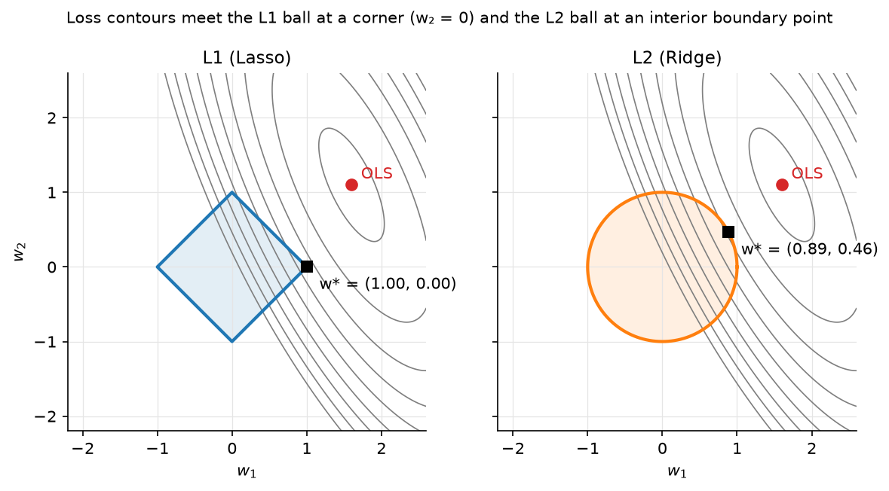

Linear regression¶
Why this matters at staff level. Linear regression is the model interviewers use to check whether you can derive results or only reproduce them. The normal equations, the SVD view of ridge, why L1 gives sparsity, and what happens when \(X^TX\) is singular are all ten-minute whiteboard questions. In system-design rounds it reappears as the calibration layer, the "simple baseline that must be beaten", and the explainable model regulators accept. Strong signal is deriving every result below from the objective, naming the failure mode of each solver, and knowing where a linear model is still the right production choice.
TL;DR: the interview card¶
- Model: \(\hat{y} = Xw\), \(X \in \R^{N \times d}\), \(w \in \R^d\). Loss \(L(w) = \tfrac{1}{N}\norm{Xw - y}^2\).
- Gradient \(\nabla_w L = \tfrac{2}{N} X^T (Xw - y)\); setting it to zero gives the normal equations \(\boxed{X^TX w = X^T y}\).
- Geometry: \(\hat{y} = X(X^TX)^{-1}X^T y\) is the orthogonal projection of \(y\) onto the column space of \(X\); the residual is orthogonal to every column.
- Singular \(X^TX\) (collinearity, \(d > N\)): infinitely many minimisers; the pseudoinverse \(w = X^+ y = V S^+ U^T y\) picks the minimum-norm one.
- Gradient descent converges at rate \((1 - \lambda_{\min}/\lambda_{\max})^t\): the condition number of \(X^TX\) is the whole story. Standardise features.
- Ridge: \(w = (X^TX + \lambda I)^{-1} X^T y\); in the SVD basis each direction is shrunk by \(\boxed{s_i^2 / (s_i^2 + \lambda)}\), small singular directions (noise) are shrunk hardest. Bayesian view: Gaussian prior \(w \sim \mathcal N(0, \sigma^2/\lambda\, I)\), ridge = MAP.
- Lasso: \(\tfrac{1}{2N}\norm{Xw-y}^2 + \lambda \norm{w}_1\); the L1 ball has corners on the axes, so the solution lands on them → exact zeros. Coordinate descent: \(w_j \leftarrow S(\tfrac{1}{N} x_j^T r_{-j}, \lambda) / (\tfrac{1}{N} x_j^T x_j)\) with soft-threshold \(S(z,\lambda) = \operatorname{sign}(z)\max(|z|-\lambda, 0)\).
- Bias–variance: OLS is unbiased with variance \(\sigma^2 (X^TX)^{-1}\); ridge trades a little bias for a large variance reduction along ill-conditioned directions.
- Production: Google's ad CTR system was a (huge, sparse, online) linear model for years; Stripe's Radar started with logistic regression; Wide & Deep keeps a linear "wide" tower for memorisation. Linear models remain the calibration layer on top of almost every deep model.
1. Intuition first¶
Take three houses with one feature each (size in 100 m²) and their prices (in 100k):
The first column is the intercept. No line passes through all three points, so we ask for the line whose vertical misses are smallest in the squared sense. Any \(w\) gives a prediction \(Xw\) that lives in the plane spanned by the two columns of \(X\) inside \(\R^3\). The best \(\hat{y}\) is the point of that plane closest to \(y\): the orthogonal projection. "Closest" means the residual \(y - \hat{y}\) is perpendicular to the plane, i.e. perpendicular to both columns: \(X^T(y - Xw) = 0\). That is the normal-equation system. Solving it here gives \(w = (0, 1.5)\): intercept \(0\), slope \(1.5\), residual \((0.5, 0, -0.5)\), and you can check \(X^T r = 0\).
Everything else in the chapter is this picture under stress: what if the columns are nearly parallel (collinearity), what if there are more columns than points (\(d > N\)), what if we want to pull \(w\) toward zero (ridge) or force some entries to be exactly zero (lasso), and how to solve the system when \(d\) is \(10^6\) and \(N\) is \(10^9\) (gradient methods).

Figure: the same elliptical loss contours meet a diamond (L1 ball) at a corner where \(w_2 = 0\), but meet a circle (L2 ball) at a generic boundary point where both coordinates are non-zero. This is the entire reason lasso selects features and ridge does not.
2. The math¶
Uses: gradient of a quadratic form, SVD, orthogonal projections (Part I), Gaussian MAP (probability).
2.1 Least squares and the normal equations¶
With \(X \in \R^{N \times d}\) (one example per row, intercept as a column of ones) and \(y \in \R^N\), the objective is
Differentiate term by term (\(\nabla_w w^T A w = 2Aw\) for symmetric \(A\), \(\nabla_w w^T b = b\)):
The Hessian \(\tfrac{2}{N}X^TX\) is positive semi-definite, so \(L\) is convex and every stationary point is a global minimum. Setting the gradient to zero:
Meaning: the optimal residual \(r = y - Xw^\star\) satisfies \(X^T r = 0\): it is orthogonal to every feature. The fitted values \(\hat{y} = Hy\) with \(H = X(X^TX)^{-1}X^T\) are the orthogonal projection of \(y\) onto \(\operatorname{col}(X)\) (\(H\) is symmetric and idempotent: \(H^2 = H\)).
2.2 When \(X^TX\) is singular: the pseudoinverse¶
\(X^TX\) is singular exactly when the columns of \(X\) are linearly dependent: a duplicated feature, one-hot columns that sum to the intercept, or \(d > N\). Then the normal equations have infinitely many solutions (add anything in the null space of \(X\) to \(w\) and \(Xw\) is unchanged). Take the thin SVD \(X = U S V^T\) with \(U \in \R^{N \times r}\), \(S = \diag(s_1, \dots, s_r)\), \(V \in \R^{d \times r}\), \(r = \operatorname{rank}(X)\). Every least-squares solution has the form \(w = V S^{-1} U^T y + (\text{null-space part})\), and the one with the smallest norm drops the null-space part:
where \(S^{-1}\) inverts only the non-zero singular values (in code: those above
rcond · s_max). np.linalg.lstsq returns exactly this. Meaning: when features are
redundant, least squares cannot tell which one deserves the weight; the pseudoinverse
splits it evenly (minimum norm), ridge does the same smoothly, lasso picks one.
2.3 Gradient descent and conditioning¶
Gradient descent iterates \(w_{t+1} = w_t - \eta \nabla L(w_t)\). Because \(L\) is quadratic, we can solve the recursion exactly. Let \(A = \tfrac{2}{N}X^TX\) with eigenvalues \(\lambda_1 \ge \dots \ge \lambda_d > 0\) and eigenvectors \(Q\). Writing the error \(e_t = w_t - w^\star\) in the eigenbasis, \(\tilde e_t = Q^T e_t\),
Stability needs \(|1 - \eta\lambda_i| < 1\) for all \(i\), so \(\eta < 2/\lambda_1\). With the safe choice \(\eta = 1/\lambda_1\) the slowest direction contracts by \(1 - \lambda_d/\lambda_1 = 1 - 1/\kappa\) per step, where \(\kappa = \lambda_1/\lambda_d\) is the condition number. Reaching error \(\epsilon\) takes \(t \approx \kappa \log(1/\epsilon)\) steps.
Meaning: gradient descent on a linear model is only as fast as your features are well-scaled and de-correlated. A feature in metres and one in millimetres gives \(\kappa \sim 10^6\). Standardising each column to unit variance fixes scale; it does not fix correlation (that is what ridge, or a preconditioner, does). Momentum and Adam are attempts to be less sensitive to \(\kappa\); see optimization.
2.4 Ridge regression¶
Add an L2 penalty: \(L_\lambda(w) = \norm{Xw - y}^2 + \lambda\norm{w}^2\). The gradient is \(2X^T(Xw - y) + 2\lambda w\), so
\(X^TX + \lambda I\) has eigenvalues \(s_i^2 + \lambda > 0\), so it is always invertible: ridge is well-posed even when OLS is not. Substitute the SVD \(X = USV^T\):
Meaning: in the principal-direction basis of the data, ridge multiplies each OLS coefficient by \(s_i^2/(s_i^2+\lambda) \in (0,1)\). Directions with large \(s_i\) (high variance in \(X\), well determined) are barely touched; directions with \(s_i^2 \ll \lambda\) (nearly-collinear, noise-dominated) are crushed toward zero. The "effective degrees of freedom" \(\sum_i s_i^2/(s_i^2+\lambda)\) falls smoothly from \(d\) to \(0\) as \(\lambda\) grows.
Bayesian view. If \(y \mid w \sim \mathcal N(Xw, \sigma^2 I)\) and \(w \sim \mathcal N(0, \tau^2 I)\), the log-posterior is \(-\tfrac{1}{2\sigma^2}\norm{Xw-y}^2 - \tfrac{1}{2\tau^2}\norm{w}^2 + \text{const}\), so the MAP estimate is ridge with \(\lambda = \sigma^2/\tau^2\). The lasso is the MAP under a Laplace prior \(p(w_j) \propto e^{-|w_j|/b}\).
2.5 Bias and variance of the estimators¶
Assume \(y = Xw_0 + \varepsilon\), \(\E[\varepsilon] = 0\), \(\operatorname{Cov}(\varepsilon) = \sigma^2 I\).
- OLS: \(\E[w^\star] = (X^TX)^{-1}X^T X w_0 = w_0\) (unbiased), \(\operatorname{Cov}(w^\star) = \sigma^2 (X^TX)^{-1}\), so the variance along direction \(v_i\) is \(\sigma^2/s_i^2\), it explodes in nearly-collinear directions. Gauss–Markov: OLS has the smallest variance among unbiased linear estimators.
- Ridge: \(\E[w_\lambda] = (X^TX + \lambda I)^{-1}X^TX\, w_0 \ne w_0\) (biased toward \(0\)), \(\operatorname{Cov}(w_\lambda) = \sigma^2 (X^TX+\lambda I)^{-1} X^TX (X^TX + \lambda I)^{-1}\), whose component along \(v_i\) is \(\sigma^2 s_i^2/(s_i^2+\lambda)^2 < \sigma^2/s_i^2\).
Meaning: along a direction with \(s_i^2 \ll \lambda\) ridge trades a bias of size \(\approx |v_i^T w_0|\) for a variance reduction from \(\sigma^2/s_i^2\) (huge) to \(\approx \sigma^2 s_i^2/\lambda^2\) (tiny). There always exists a \(\lambda > 0\) whose total MSE beats OLS (Hoerl–Kennard); cross-validation finds it.
2.6 Lasso: geometry and coordinate descent¶
Why sparsity. The constrained form (\(\min \norm{Xw-y}^2\) s.t. \(\norm{w}_1 \le t\)) makes the geometry visible: the elliptical level sets of the loss expand from the OLS point until they first touch the constraint set. The L1 ball is a polytope whose corners lie on the coordinate axes (where some \(w_j = 0\)). Contours hit a polytope at a corner or edge for a set of loss orientations of positive measure; a sphere is hit at a point with all coordinates non-zero except on a measure-zero set. In \(d\) dimensions the L1 ball has many low-dimensional faces (each corresponds to a sparse support), so for typical data the touching point is sparse.
Coordinate descent with soft-thresholding. The L1 term is not differentiable at \(0\), but it is separable across coordinates, so we minimise one \(w_j\) at a time with the rest fixed. Write the partial residual \(r_{-j} = y - \sum_{k \ne j} x_k w_k\) (the \(N\)-vector of what feature \(j\) still has to explain). Then as a function of \(w_j\) alone,
Let \(a = \tfrac{1}{N}\norm{x_j}^2\) and \(\rho = \tfrac{1}{N} x_j^T r_{-j}\). The subdifferential condition \(0 \in a w_j - \rho + \lambda\,\partial|w_j|\) has three cases: \(w_j > 0 \Rightarrow w_j = (\rho - \lambda)/a\) (valid if \(\rho > \lambda\)); \(w_j < 0 \Rightarrow w_j = (\rho + \lambda)/a\) (valid if \(\rho < -\lambda\)); otherwise \(w_j = 0\) (valid if \(|\rho| \le \lambda\), because then \(\rho \in [-\lambda, \lambda] = \lambda\,\partial|0|\)). Compactly,
Meaning: each coordinate is set to its OLS value shrunk toward zero by \(\lambda\) and clipped at zero. The dead zone \(|\rho| \le \lambda\) is where the sparsity comes from. Cycling over coordinates decreases a convex objective monotonically and converges; with warm starts along a decreasing \(\lambda\) path this is the glmnet algorithm. With standardised columns (\(a = 1\)) the largest \(\lambda\) that keeps every weight at zero is \(\lambda_{\max} = \max_j |x_j^T y|/N\).
2.7 Scaling, collinearity, interactions¶
- Scaling changes ridge and lasso solutions (the penalty is not scale-invariant) and the GD convergence rate; it does not change the OLS fit. Standardise before penalising; never penalise the intercept.
- Collinearity inflates OLS variance (\(\sigma^2/s_i^2\)) and makes weights uninterpretable (a pair of near-duplicate features can take \(+10^6\) and \(-10^6\)). Diagnose with the variance inflation factor \(\mathrm{VIF}_j = 1/(1 - R_j^2)\) or the condition number. Ridge stabilises; lasso picks one of the duplicates arbitrarily (elastic net, ridge + lasso, keeps groups together).
- Interactions and non-linearity are added as features (\(x_1 x_2\), \(x^2\), spline bases, hashed crosses): the model stays linear in \(w\), so every result here still holds. This is how "linear" CTR models capture
(country × ad_id)effects, Google's paper below has billions of such crossed features.
3. Implementation¶
All code is src/mlbook/classical/linear_regression.py. Every line that creates a
tensor carries its shape.
def fit_ols_normal_equations(X: np.ndarray, y: np.ndarray) -> np.ndarray:
gram = X.T @ X # (d, d)
rhs = X.T @ y # (d,)
return np.linalg.solve(gram, rhs) # (d,)
Use solve, never inv: it is faster (\(O(d^3/3)\) via Cholesky-style LU) and more
accurate. This function fails loudly on a singular Gram matrix, which is what you want
in a test and not what you want in production.
def fit_ols_pinv(X: np.ndarray, y: np.ndarray, rcond: float = 1e-10) -> np.ndarray:
U, s, Vt = np.linalg.svd(X, full_matrices=False) # U: (N, r), s: (r,), Vt: (r, d), r=min(N,d)
s_inv = np.where(s > rcond * s.max(), 1.0 / np.maximum(s, 1e-300), 0.0) # (r,)
coeffs = s_inv * (U.T @ y) # (r,) S^+ U^T y
return Vt.T @ coeffs # (d,) V S^+ U^T y
The where implements \(S^+\): singular values below the tolerance are treated as
zero and their directions get no weight (minimum-norm solution).
def fit_ols_gradient_descent(X, y, lr=None, n_steps=1000):
N, d = X.shape
if lr is None:
lam_max = np.linalg.eigvalsh(X.T @ X)[-1] # scalar, largest eigenvalue of (d, d)
lr = N / (2.0 * lam_max)
w = np.zeros(d) # (d,)
for _ in range(n_steps):
w = w - lr * ols_gradient(X, y, w) # (d,)
return w
The default step is \(1/L\) where \(L = \tfrac{2}{N}\lambda_{\max}(X^TX)\) is the Lipschitz constant of the gradient, the largest step that is guaranteed to decrease the loss every iteration (§2.3).
def fit_ridge_svd(X, y, lam):
U, s, Vt = np.linalg.svd(X, full_matrices=False) # U: (N, r), s: (r,), Vt: (r, d)
shrink = s / (s**2 + lam) # (r,) s_i / (s_i^2 + λ)
return Vt.T @ (shrink * (U.T @ y)) # (d,)
This is §2.4 verbatim; the test checks it against the closed form
solve(X.T @ X + lam * I, X.T @ y) to \(10^{-10}\). In production you would use the
closed form once (one Cholesky of a \(d \times d\) matrix); the SVD form is what you
use when you want to sweep many \(\lambda\) values (one SVD, then each \(\lambda\) costs \(O(rd)\)).
def fit_lasso_coordinate_descent(X, y, lam, n_sweeps=200, tol=1e-8):
N, d = X.shape
w = np.zeros(d) # (d,)
col_sq = (X * X).sum(axis=0) / N # (d,) (1/N) x_j^T x_j
residual = y.copy() # (N,) y - X w, kept up to date incrementally
for _ in range(n_sweeps):
max_change = 0.0
for j in range(d):
if col_sq[j] == 0.0:
continue
x_j = X[:, j] # (N,)
partial = residual + x_j * w[j] # (N,) r_{-j}
rho = x_j @ partial / N # scalar (1/N) x_j^T r_{-j}
w_new = soft_threshold(rho, lam) / col_sq[j] # scalar
residual = residual - x_j * (w_new - w[j]) # (N,)
max_change = max(max_change, abs(w_new - w[j]))
w[j] = w_new
if max_change < tol:
break
return w
Two details matter for speed. The residual is updated incrementally (\(O(N)\) per coordinate instead of recomputing \(Xw\) at \(O(Nd)\)), so one full sweep is \(O(Nd)\), the same as one gradient step, but each coordinate move is exact. And the partial residual \(r_{-j}\) is obtained by adding back the current contribution of feature \(j\) rather than recomputing a sum over \(d - 1\) features.
How you'd test it. tests/test_classical_linear.py checks: normal equations
and pseudoinverse against np.linalg.lstsq (including a planted collinear column);
ols_gradient against central finite differences; GD converging to the lstsq
solution; ridge closed form against the SVD form for three \(\lambda\); lasso recovering a
planted 3-sparse support with exact zeros elsewhere, satisfying the KKT condition
\(\tfrac{1}{N}x_j^T r = \lambda\operatorname{sign}(w_j)\) on active coordinates, and reducing to
OLS at \(\lambda = 0\).
Full implementation: src/mlbook/classical/linear_regression.py
"""Linear regression: OLS (normal equations, pseudoinverse, gradient descent),
Ridge (closed form and SVD shrinkage view) and Lasso (coordinate descent with
soft-thresholding).
Conventions
-----------
* ``X`` is ``(N, d)``: one example per row. A bias column is *not* added
automatically; call :func:`add_bias` when you want an intercept.
* ``y`` is ``(N,)``.
* Every estimator returns a weight vector ``w`` of shape ``(d,)`` such that the
prediction is ``X @ w``.
"""
from __future__ import annotations
import numpy as np
def add_bias(X: np.ndarray) -> np.ndarray:
"""Append a column of ones so the last weight acts as the intercept.
Input ``X``: (N, d). Output: (N, d + 1).
"""
ones = np.ones((X.shape[0], 1)) # (N, 1)
return np.concatenate([X, ones], axis=1) # (N, d+1)
def predict(X: np.ndarray, w: np.ndarray) -> np.ndarray:
"""Return ``X @ w``. ``X``: (N, d), ``w``: (d,) -> (N,)."""
return X @ w # (N,)
def mse_loss(X: np.ndarray, y: np.ndarray, w: np.ndarray) -> float:
"""Mean squared error ``(1/N) ||Xw - y||^2``. ``X``: (N, d), ``y``: (N,), ``w``: (d,)."""
r = X @ w - y # (N,)
return float(r @ r / X.shape[0])
# --------------------------------------------------------------------------- #
# Ordinary least squares
# --------------------------------------------------------------------------- #
def fit_ols_normal_equations(X: np.ndarray, y: np.ndarray) -> np.ndarray:
"""Solve the normal equations ``(X^T X) w = X^T y`` with a linear solver.
``X``: (N, d), ``y``: (N,) -> ``w``: (d,).
Requires ``X^T X`` to be invertible (``rank(X) = d``); otherwise use
:func:`fit_ols_pinv`.
"""
gram = X.T @ X # (d, d)
rhs = X.T @ y # (d,)
return np.linalg.solve(gram, rhs) # (d,)
def fit_ols_pinv(X: np.ndarray, y: np.ndarray, rcond: float = 1e-10) -> np.ndarray:
"""Minimum-norm least-squares solution ``w = X^+ y`` via the SVD.
``X = U S V^T`` (thin), ``X^+ = V S^+ U^T`` where ``S^+`` inverts the non-zero
singular values and zeroes the rest. Works when ``X^T X`` is singular.
``X``: (N, d), ``y``: (N,) -> ``w``: (d,).
"""
U, s, Vt = np.linalg.svd(X, full_matrices=False) # U: (N, r), s: (r,), Vt: (r, d), r=min(N,d)
s_inv = np.where(s > rcond * s.max(), 1.0 / np.maximum(s, 1e-300), 0.0) # (r,)
coeffs = s_inv * (U.T @ y) # (r,) S^+ U^T y
return Vt.T @ coeffs # (d,) V S^+ U^T y
def ols_gradient(X: np.ndarray, y: np.ndarray, w: np.ndarray) -> np.ndarray:
"""Gradient of ``L(w) = (1/N) ||Xw - y||^2``: ``(2/N) X^T (Xw - y)``.
``X``: (N, d), ``y``: (N,), ``w``: (d,) -> (d,).
"""
residual = X @ w - y # (N,)
return (2.0 / X.shape[0]) * (X.T @ residual) # (d,)
def fit_ols_gradient_descent(
X: np.ndarray, y: np.ndarray, lr: float | None = None, n_steps: int = 1000
) -> np.ndarray:
"""Full-batch gradient descent on the MSE.
If ``lr`` is ``None`` it is set to ``1 / L`` where ``L = 2 λ_max(X^T X) / N``
is the Lipschitz constant of the gradient, which guarantees monotone descent.
Convergence rate is governed by the condition number ``λ_max / λ_min`` of
``X^T X``: the error along the flattest direction contracts by
``(1 - λ_min/λ_max)`` per step.
``X``: (N, d), ``y``: (N,) -> ``w``: (d,).
"""
N, d = X.shape
if lr is None:
lam_max = np.linalg.eigvalsh(X.T @ X)[-1] # scalar, largest eigenvalue of (d, d)
lr = N / (2.0 * lam_max)
w = np.zeros(d) # (d,)
for _ in range(n_steps):
w = w - lr * ols_gradient(X, y, w) # (d,)
return w
# --------------------------------------------------------------------------- #
# Ridge
# --------------------------------------------------------------------------- #
def fit_ridge(X: np.ndarray, y: np.ndarray, lam: float) -> np.ndarray:
"""Closed-form ridge: ``w = (X^T X + λ I)^{-1} X^T y``.
``X``: (N, d), ``y``: (N,), ``lam`` >= 0 -> ``w``: (d,).
For ``lam > 0`` the system is always non-singular.
"""
d = X.shape[1]
gram = X.T @ X + lam * np.eye(d) # (d, d)
return np.linalg.solve(gram, X.T @ y) # (d,)
def fit_ridge_svd(X: np.ndarray, y: np.ndarray, lam: float) -> np.ndarray:
"""Ridge through the SVD, exposing the per-direction shrinkage.
With ``X = U S V^T``: ``w = V diag(s_i / (s_i^2 + λ)) U^T y``. Direction ``i``
is shrunk by the factor ``s_i^2 / (s_i^2 + λ)`` relative to OLS.
``X``: (N, d), ``y``: (N,) -> ``w``: (d,).
"""
U, s, Vt = np.linalg.svd(X, full_matrices=False) # U: (N, r), s: (r,), Vt: (r, d)
shrink = s / (s**2 + lam) # (r,) s_i / (s_i^2 + λ)
return Vt.T @ (shrink * (U.T @ y)) # (d,)
# --------------------------------------------------------------------------- #
# Lasso
# --------------------------------------------------------------------------- #
def soft_threshold(z: np.ndarray, tau: float) -> np.ndarray:
"""Proximal operator of ``τ|·|``: ``sign(z) max(|z| - τ, 0)``. Elementwise."""
return np.sign(z) * np.maximum(np.abs(z) - tau, 0.0)
def fit_lasso_coordinate_descent(
X: np.ndarray, y: np.ndarray, lam: float, n_sweeps: int = 200, tol: float = 1e-8
) -> np.ndarray:
"""Lasso by cyclic coordinate descent.
Objective: ``(1/(2N)) ||Xw - y||^2 + λ ||w||_1`` (glmnet convention).
For coordinate ``j`` with all others fixed, the exact minimiser is
w_j = S( (1/N) x_j^T r_{-j}, λ ) / ( (1/N) x_j^T x_j ),
where ``r_{-j} = y - X w + x_j w_j`` is the partial residual excluding
feature ``j`` and ``S`` is :func:`soft_threshold`.
``X``: (N, d), ``y``: (N,) -> ``w``: (d,).
"""
N, d = X.shape
w = np.zeros(d) # (d,)
col_sq = (X * X).sum(axis=0) / N # (d,) (1/N) x_j^T x_j
residual = y.copy() # (N,) y - X w, kept up to date incrementally
for _ in range(n_sweeps):
max_change = 0.0
for j in range(d):
if col_sq[j] == 0.0:
continue
x_j = X[:, j] # (N,)
partial = residual + x_j * w[j] # (N,) r_{-j}
rho = x_j @ partial / N # scalar (1/N) x_j^T r_{-j}
w_new = soft_threshold(rho, lam) / col_sq[j] # scalar
residual = residual - x_j * (w_new - w[j]) # (N,)
max_change = max(max_change, abs(w_new - w[j]))
w[j] = w_new
if max_change < tol:
break
return w
def lasso_objective(X: np.ndarray, y: np.ndarray, w: np.ndarray, lam: float) -> float:
"""``(1/(2N)) ||Xw - y||^2 + λ ||w||_1``."""
r = X @ w - y # (N,)
return float(r @ r / (2 * X.shape[0]) + lam * np.abs(w).sum())
Retype by hand¶
Reproduce from memory, in src/mlbook/classical/linear_regression.py:
| Symbol | What it must do | Target time |
|---|---|---|
fit_ols_normal_equations |
solve \(X^TXw = X^Ty\) with np.linalg.solve |
3 min |
fit_ols_pinv |
thin SVD, invert non-zero singular values only, \(V S^+ U^T y\) | 8 min |
ols_gradient + fit_ols_gradient_descent |
\(\tfrac{2}{N}X^T(Xw-y)\), step \(1/L\) from \(\lambda_{\max}(X^TX)\) | 8 min |
fit_ridge and fit_ridge_svd |
closed form; SVD form with s / (s**2 + lam) |
8 min |
soft_threshold + fit_lasso_coordinate_descent |
incremental residual, \(\rho\), \(S(\rho,\lambda)/a\) | 20 min |
Fine to just read: add_bias, predict, mse_loss, lasso_objective.
Check with pytest tests/test_classical_linear.py -q (one test per symbol, named
test_<symbol>_…). Whole file from a blank editor: 45 minutes.
4. Systems view: cost, failure modes, trade-offs¶
| Solver | Cost | Memory | Use when |
|---|---|---|---|
| Normal equations / Cholesky | \(O(Nd^2 + d^3)\) | \(O(d^2)\) | \(d \lesssim 10^4\), one fit, well-conditioned |
| SVD / pseudoinverse | \(O(Nd\min(N,d))\) | \(O(Nd)\) | rank-deficient, or sweeping many \(\lambda\) |
QR (lstsq) |
\(O(Nd^2)\) | \(O(Nd)\) | default dense solver; numerically safest |
| Full-batch GD | \(O(Nd)\) per step, \(\kappa\log(1/\epsilon)\) steps | \(O(d)\) | \(d\) huge, \(X\) sparse, \(\kappa\) moderate |
| SGD / FTRL | \(O(\text{nnz})\) per example | \(O(d)\) | streaming, \(N \to \infty\), sparse crosses (ads) |
| Coordinate descent | \(O(Nd)\) per sweep | \(O(N + d)\) | lasso / elastic net, regularisation paths |
Failure modes to name in an interview:
- Ill-conditioning. Symptoms: huge weights of opposite sign, GD stalls,
solvewarns about a singular matrix. Fixes: standardise, drop/merge duplicates, ridge. - Outliers. Squared loss gives an outlier a quadratic vote; one bad label can move the line arbitrarily (the hat matrix diagonal \(H_{ii}\), called leverage, tells you which points can). Fixes: Huber loss, quantile regression, or a tree model.
- Heteroscedastic / heavy-tailed targets. OLS is still unbiased but no longer efficient and confidence intervals lie. Fix: weighted least squares, or model \(\log y\).
- Extrapolation. Linear models extrapolate linearly without any warning. Trees flat-line, which is often safer.
- Leakage through interactions. With hashed crosses you can memorise
(user_id × item_id); regularise crosses more heavily than singletons (Google's per-coordinate learning rates do this implicitly).
When to use what (decision rule). Tabular problem with \(\le\) a few million rows and hand-designed features → gradient-boosted trees beat linear models almost always (trees chapter). Sparse, extremely high-dimensional, streaming data (ads, search logs) → online linear model with per-coordinate learning rates, possibly fed by tree-derived features. Need interpretability, monotonicity guarantees, or a regulator-friendly model → linear (or GAM). Need a fast, tiny baseline to justify a deep model → linear first, always.
5. In production¶
Google: ad click prediction with FTRL-Proximal
Problem: predict \(P(\text{click})\) for billions of query–ad pairs per day, with billions of sparse crossed features, under strict latency and memory limits. What they built: a logistic regression (a linear model on the log-odds; next chapter) trained online with FTRL-Proximal, which combines the accuracy of per-coordinate adaptive learning rates with the sparsity of L1 regularisation so that most of the billions of weights are exactly zero and need not be stored. Rejected alternative: plain online gradient descent with L1, which produces far fewer exact zeros for the same accuracy. The update rule is the coordinate-wise soft-thresholding of §2.6, applied one example at a time at planetary scale. Source: McMahan et al., "Ad Click Prediction: a View from the Trenches", KDD 2013. research.google.
Google Play: Wide & Deep
Problem: app recommendation where some feature crosses should be memorised
exactly (installed_app=netflix AND impression_app=pandora) and others
generalised via embeddings. What they built: a linear "wide" tower over
hashed cross-product features, jointly trained with a deep tower; the wide part
is exactly a sparse linear model trained with FTRL. Trade-off stated in the
paper: the deep part over-generalises on rare crosses, the wide part cannot
generalise to unseen ones; the sum fixes both. Cheng et al., 2016.
arXiv:1606.07792.
Stripe: Radar started with logistic regression
Stripe's fraud system began with simple models (logistic regression) before moving to tree ensembles and then deep networks as data volume and tooling grew; the engineering post is explicit that the linear baseline came first and that model complexity was added only when it paid for itself in the precision/recall trade-off that merchants see. Drapeau, "How we built it: Stripe Radar", 2023, stripe.dev.
Everyone: the calibration layer
Temperature scaling and Platt scaling, the standard post-hoc calibrators for deep classifiers, are one- and two-parameter linear models fitted on the model's logit (Guo et al., 2017, arXiv:1706.04599). When a ranking team says "we re-calibrate the CTR model weekly", they are refitting a linear regression on held-out logits. Details in the next chapter.
6. Interview questions and strong answers¶
Derive the normal equations and explain them geometrically.
Expand \(\norm{Xw-y}^2\), differentiate to \(2X^T(Xw - y)\), set to zero: \(X^TXw = X^Ty\). Geometrically the residual is orthogonal to every column of \(X\), so \(\hat y\) is the projection of \(y\) onto \(\operatorname{col}(X)\) and the hat matrix \(H = X(X^TX)^{-1}X^T\) is a projector (\(H^2 = H\), \(H^T = H\)). Staff follow-up: what is \(\operatorname{tr}(H)\) and why do we care? It is \(d\), the degrees of freedom; for ridge it becomes \(\sum s_i^2/(s_i^2+\lambda)\), which is how you compare a ridge fit to an OLS fit with fewer features on equal footing (AIC/GCV).
\(X^TX\) is singular. What do you do?
Diagnose first: duplicated columns, dummy-variable trap, \(d > N\). Options in
order of preference: remove the redundancy (interpretability), ridge (smooth,
always invertible, closed form), pseudoinverse (minimum-norm solution, what
lstsq does silently, which is dangerous because it hides the problem). Never
np.linalg.inv on a nearly-singular matrix. Follow-up: why does the
minimum-norm solution generalise reasonably in the \(d > N\) regime? Because
among all interpolating solutions it has the smallest weights, which is
implicitly what GD from zero converges to; this is the entry point to the
"benign overfitting"/double-descent literature.
Why does L1 give sparse solutions and L2 doesn't?
Two arguments. Geometric: level sets of the loss meet the L1 ball at its corners (on the axes) with positive probability; the L2 ball has no corners. Analytic: the coordinate-wise optimum is \(S(\rho, \lambda)/a\), which is exactly zero whenever \(|\rho| \le \lambda\), a dead zone of positive width. For ridge the coordinate update is \(\rho/(a + \lambda)\), which is zero only if \(\rho = 0\). Follow-up: when would you still prefer ridge? Correlated groups of useful features (lasso picks one arbitrarily and is unstable across resamples), when \(d \gg N\) and you expect dense signal, and when you need a closed form.
Explain ridge's effect using the SVD.
\(w_\lambda = \sum_i \frac{s_i^2}{s_i^2+\lambda}\frac{u_i^Ty}{s_i}v_i\): each principal direction's OLS coefficient is multiplied by a factor in \((0,1)\) that is \(\approx 1\) when \(s_i^2 \gg \lambda\) and \(\approx s_i^2/\lambda\) when \(s_i^2 \ll \lambda\). Ridge is a soft version of "drop the low-variance principal components" (principal-components regression is the hard version). Follow-up: what is the OLS variance along direction \(i\)? \(\sigma^2/s_i^2\), which is why the low-\(s_i\) directions are exactly the ones ridge should damp.
Gradient descent on a linear model is slow. Why, and what do you do?
Convergence is \((1 - 1/\kappa)^t\) with \(\kappa\) the condition number of \(X^TX\). Standardise features (fixes scale), decorrelate or add ridge (raises \(\lambda_{\min}\), lowers \(\kappa\)), use momentum / conjugate gradient (\(\sqrt\kappa\) dependence), or if \(d\) is small just solve the normal equations. Follow-up: how does this connect to batch norm / Adam in deep nets? Same disease (ill-conditioned curvature), same medicine (rescale coordinates so curvature is more uniform).
You have 10⁹ rows and 10⁷ sparse features. Which solver?
Not the normal equations (\(d^2\) memory is 10¹⁴). Online SGD or FTRL with per-coordinate learning rates and L1 for sparsity; one pass over the data, \(O(\text{nnz})\) per example, weights that are mostly zero. This is literally the Google CTR system. Follow-up: how do you get calibrated probabilities out of it? Train it as logistic regression (next chapter) and add a small calibration model on held-out data; the paper reports both.
Bias–variance: compare OLS and ridge.
OLS: unbiased, variance \(\sigma^2(X^TX)^{-1}\), unbounded along ill-conditioned directions. Ridge: bias \(\propto \lambda/(s_i^2+\lambda)\) along direction \(i\), variance \(\sigma^2 s_i^2/(s_i^2+\lambda)^2\). For small \(\lambda\) the variance drops faster (first order) than the bias grows (second order), so some \(\lambda > 0\) always lowers MSE. Follow-up: how do you pick \(\lambda\) without a validation set? Leave-one-out CV has a closed form for ridge via the hat matrix: \(\sum_i \left(\frac{y_i - \hat y_i}{1 - H_{ii}}\right)^2\).
7. Exercises¶
★ Exercise 1. Show that the hat matrix \(H = X(X^TX)^{-1}X^T\) satisfies \(H^2 = H\) and \(\operatorname{tr}(H) = d\).
Solution
\(H^2 = X(X^TX)^{-1}X^TX(X^TX)^{-1}X^T = X(X^TX)^{-1}X^T = H\). For the trace use cyclicity: \(\operatorname{tr}(X(X^TX)^{-1}X^T) = \operatorname{tr}((X^TX)^{-1}X^TX) = \operatorname{tr}(I_d) = d\).
★★ Exercise 2. Prove that for \(\eta = 1/\lambda_{\max}\), full-batch GD on the MSE decreases the loss at every step (not just the error norm).
Solution
\(L\) is quadratic with Hessian \(A\), so exactly \(L(w - \eta g) = L(w) - \eta\norm{g}^2 + \tfrac{\eta^2}{2} g^T A g \le L(w) - \eta\norm{g}^2 + \tfrac{\eta^2\lambda_{\max}}{2}\norm{g}^2\). With \(\eta = 1/\lambda_{\max}\) the decrease is at least \(\norm{g}^2/(2\lambda_{\max}) \ge 0\), with equality only when \(g = 0\).
★★ Exercise 3 (coding). Implement fit_elastic_net(X, y, lam, alpha) minimising
\(\tfrac{1}{2N}\norm{Xw-y}^2 + \lambda\left(\alpha\norm{w}_1 + \tfrac{1-\alpha}{2}\norm{w}^2\right)\)
by coordinate descent, and check that alpha=1 reproduces fit_lasso_coordinate_descent
and alpha=0 reproduces ridge with penalty \(N\lambda\).
Solution
The coordinate objective gains a term \(\tfrac{\lambda(1-\alpha)}{2}w_j^2\), so the update becomes \(w_j = S(\rho, \lambda\alpha) / (a + \lambda(1-\alpha))\). Change one line in the lasso loop:
Runnable check:from mlbook.classical import linear_regression as lr
rng = np.random.default_rng(0); X = rng.standard_normal((100, 5)); y = X @ [1, -1, 0, 0, 2] + 0.1 * rng.standard_normal(100)
np.testing.assert_allclose(fit_elastic_net(X, y, 0.1, 1.0), lr.fit_lasso_coordinate_descent(X, y, 0.1), atol=1e-6)
np.testing.assert_allclose(fit_elastic_net(X, y, 0.1, 0.0), lr.fit_ridge(X, y, 0.1 * 100), atol=1e-6)
★★ Exercise 4. With standardised columns, show that the smallest \(\lambda\) for which the lasso solution is entirely zero is \(\lambda_{\max} = \max_j |x_j^T y| / N\).
Solution
At \(w = 0\) the partial residual is \(y\) for every \(j\), so \(\rho_j = x_j^Ty/N\) and the coordinate update is \(S(\rho_j, \lambda)\), which stays zero for all \(j\) iff \(\lambda \ge \max_j|\rho_j|\). Since \(w = 0\) is then a fixed point of a convergent algorithm for a convex objective, it is the optimum.
★★★ Exercise 5. Derive the leave-one-out cross-validation identity for ridge: \(\text{LOO} = \tfrac{1}{N}\sum_i \left(\frac{y_i - \hat y_i}{1 - H_{ii}}\right)^2\) with \(H = X(X^TX + \lambda I)^{-1}X^T\).
Solution
Let \(w^{(-i)}\) be the fit without example \(i\) and \(\hat y^{(-i)}_i = x_i^T w^{(-i)}\). The full-data fit with \(y_i\) replaced by \(\hat y^{(-i)}_i\) has the same optimum as the leave-one-out fit (the \(i\)-th residual is zero, so it contributes nothing). Linearity of \(\hat y = Hy\) then gives \(\hat y_i^{(-i)} = \hat y_i + H_{ii}(\hat y_i^{(-i)} - y_i)\); solving, \(y_i - \hat y_i^{(-i)} = (y_i - \hat y_i)/(1 - H_{ii})\). Square and average.
References¶
- Tibshirani, R. "Regression Shrinkage and Selection via the Lasso." JRSS-B 58(1), 1996. DOI
- Friedman, J., Hastie, T., Tibshirani, R. "Regularization Paths for Generalized Linear Models via Coordinate Descent." J. Stat. Software 33(1), 2010. jstatsoft.org
- Hastie, Tibshirani, Friedman. The Elements of Statistical Learning, 2nd ed., ch. 3. Free PDF
- McMahan, H. B. et al. "Ad Click Prediction: a View from the Trenches." KDD 2013. research.google
- Cheng, H.-T. et al. "Wide & Deep Learning for Recommender Systems." 2016. arXiv:1606.07792
- Drapeau, R. "How we built it: Stripe Radar." Stripe, 2023. stripe.dev
- Guo, C. et al. "On Calibration of Modern Neural Networks." ICML 2017. arXiv:1706.04599
- Halko, N., Martinsson, P.-G., Tropp, J. "Finding Structure with Randomness." SIAM Review, 2011. arXiv:0909.4061 (for the SVD at scale; see dimensionality reduction)